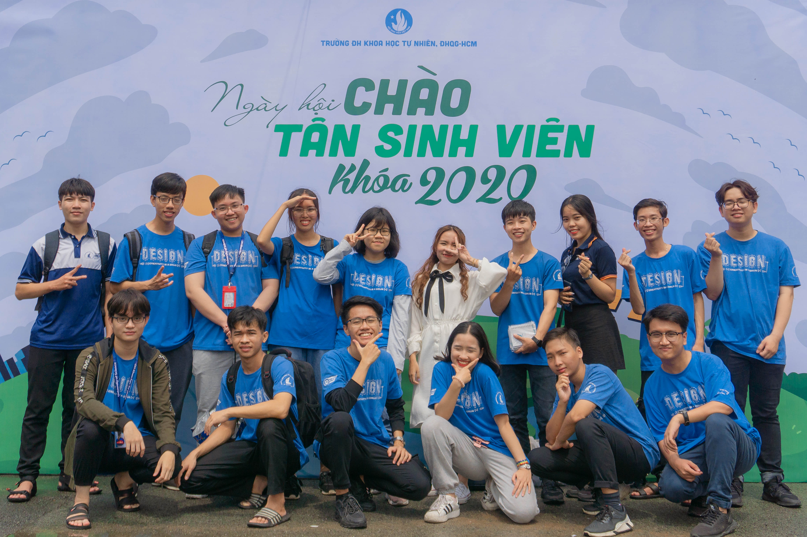

Who I am
My name is Bao. I am a developer, designer from Ho Chi Minh City, Vietnam. My personality is Turbulent Logician (INTP-T), with the Constant Improvement strategy.
I have done some interesting projects, attended some competitions and achieved some awards. As a tech insider, I spend most of my time self-study, engaged in tech communities and explore the amazing things that craft this modern world.
What I do
in my first 2-year in university
"Creativity is a drug."
Design ITUS club was established on October 25, 2010, is an academic club of the Faculty of Information Technology, Vietnam National University, Ho Chi Minh City, University of Science. This is a place for students with passion for graphic design, UI/UX design, photography, photo editing, video making and editing, hand-drawing and digital painting.
Outr Space is the annual academic competition of the Design ITUS Club. Held for the first time in May 2017, this is a design and creativity contest with the slogan "Thinking outside of the box", attracting many students to participate. This is an opportunity for students to try their best, show their talents and creativity.

Projects
This project is the submission for the AI Hackathon "RESET 1010" by the Ministry of Science and Technology of Vietnam.
Project idea:
AGRION is an online agriculture marketplace that: helps farmers across the country sell crops directly and make better profits, as middlemen are reduced; benefits the customers who get fresh produce at better prices/conditions by using Agrion Vision, the core AI function, which can: recognize agriculture products are in good or bad condition, predict the maturity of agricultural products so users can know how long they remain usable in order to help both farmers and customers easier and quicker in the dealing process, to rescue the excess agriculture inventory.

The core AI function - Agrion Vision - is an application of Image Classification in Computer Vision technology.
We use a technique called Transfer Learning, namely MobileNets - a pre-trained Convolutional Neural Networks - to train the machine learning model to recognize the agricultural products are in good or bad condition and predict how long they remain usable from photos that users uploaded.
The model we train is Tensorflow model that can be exported into 2 types: Tensorflow Lite to implement on mobile apps (in collaboration with Flutter) and Tensorflow.js to implement on the web.
In the Agrion Vision demo for this hackathon, we have gathered and trained the model using a dataset including approximately 1470 images of mangoes with “in-good-condition” label and 1380 images of mangoes with “in-bad-condition” label. The accuracy of this model is pretty high, even in different backgrounds, it still recognizes which mango is in good or bad condition.
Link to project on Github »See more about the awards »
See more on my Github Profile
Awards
By Faculty of Information Technology - Vietnam National University - University of Science
A five-round competition focuses on IT knowledge, team working, theme issue solving, organized by the Faculty of Information Technology, University of Science. My team won the 1st prize in the 24-hours hackathon of round 3 as I was the leader.


Certificates
Education
Vietnam National University - University of Science
Faculty of Information Technology - FIT HCMUS
Bachelor's Degree
What I will do
© Bui Quang Bao. All Rights Reserved.